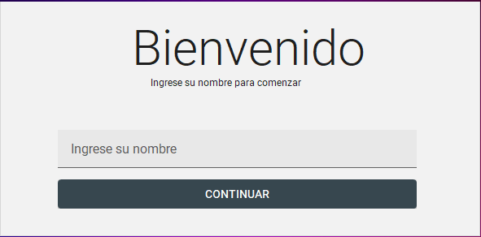
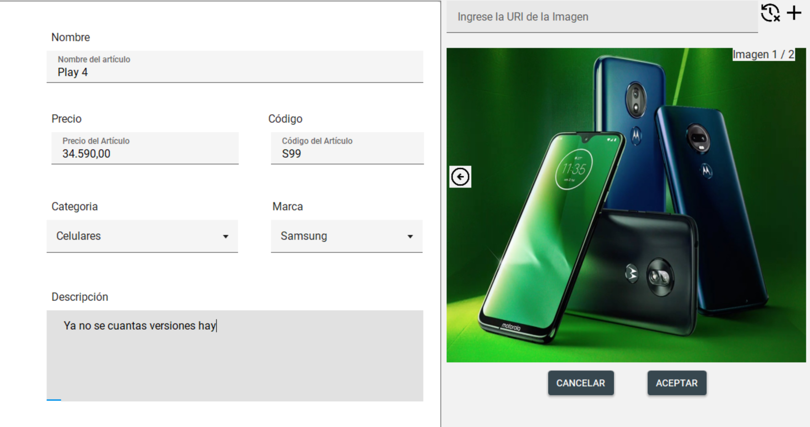
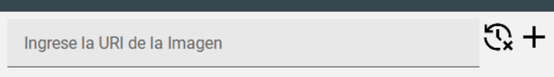

Bienvenido a la Aplicación de Gestión de Artículos
Esta aplicación fue diseñada para que gestionar tus artículos, marcas y categorías sea rápido y sencillo. Podrás dar de alta, modificar o eliminar artículos, organizar marcas y categorías, y visualizar imágenes de tus productos de manera fácil. Además, cuenta con filtros inteligentes que te permitirán encontrar lo que buscas en segundos.
Contenido
1. Introducción y Menú
Al abrir la aplicación, te recibe una ventana de bienvenida donde podrás ingresar tu nombre para personalizar la experiencia. Luego, podrás navegar mediante un menú tipo hamburguesa, elegante y fácil de usar, que te permitirá acceder rápidamente a las secciones principales:
- Artículos
- Marcas
- Categorías
- Ayuda
- Acerca de
2. Gestión de Artículos
La sección de Artículos es el corazón de la aplicación. Aquí podrás ver todos tus productos en un panel central, donde se muestra de forma clara y ordenada cada artículo con su nombre, categoría, marca y precio.
Para cada artículo, tendrás opciones intuitivas para:
- Editar la información del producto.
- Eliminar artículos que ya no necesites.
- Ver más detalles y características del artículo.
La aplicación permite previsualizar las imágenes de cada artículo y recorrerlas fácilmente, ya sea que estén cargadas desde Internet o desde archivos locales.
Además, encontrarás herramientas de filtrado rápido y avanzado:
- Filtros rápidos.
- Filtros avanzados activables con un simple Check, que permiten buscar por cualquier campo como nombre, categoría, marca o precio.
Al agregar un artículo, la aplicación gestiona automáticamente el formato de moneda argentina y valida los campos obligatorios, haciendo la carga de productos rápida y sin errores.
En la barra superior tienes la posibilidad de quitar una imagen o seguir agregando.
En la parte inferior de la sección, encontrarás un mensaje de bienvenida personalizado y la fecha y hora actual del sistema para que siempre sepas en qué momento estás trabajando.